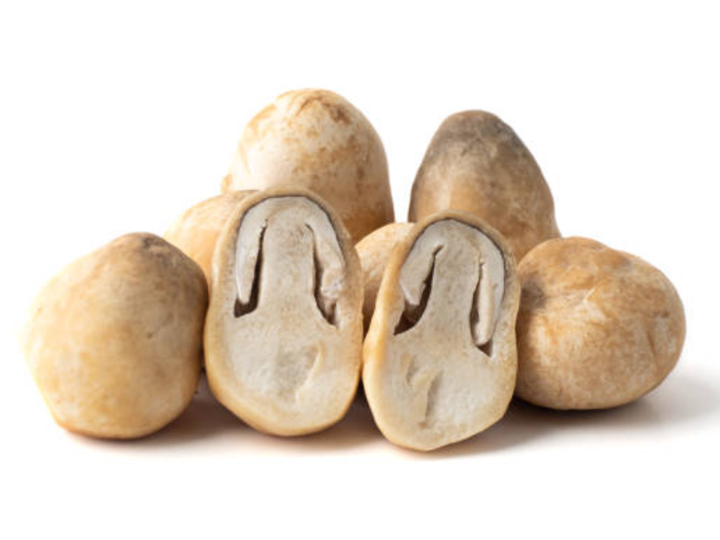
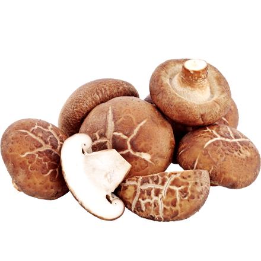
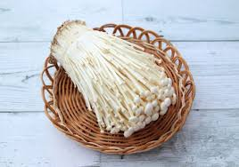
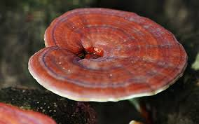

1. เห็ดนางฟ้า (Oyster Mushroom) นิยมเพาะเลี้ยงในประเทศไทย รับประทานได้ทั้งแบบสดหรือปรุงสุก ลักษณะ หมวกเห็ดสีขาว เทา หรือม่วงอมเทา รูปร่างคล้ายพัด ไม่มีวงแหวนหรือเยื่อหุ้ม ก้านสั้นหรือแทบไม่มี ข้อดี มีโปรตีนสูง ไขมันต่ำ ช่วยลดคอเลสเตอรอล กระตุ้นภูมิคุ้มกัน ย่อยง่าย เหมาะกับผู้ที่ทานมังสวิรัติ

2. เห็ดฟาง (Straw Mushroom) เห็ดที่พบได้บ่อยในอาหารไทย เช่น แกงเห็ด ต้มยำเห็ด ลักษณะ ดอกเห็ดทรงกลม ขนาดเล็ก-กลาง สีเทาเข้มหรือสีน้ำตาล พบบ่อยในรูป "ดอกตูม" ซึ่งอร่อยและเนื้อแน่น ข้อดี อุดมด้วยกรดอะมิโนจำเป็น มีวิตามิน B และธาตุเหล็ก ช่วยบำรุงเลือด บำรุงประสาท มีฤทธิ์ต้านอนุมูลอิสระ
3. เห็ดหอม (Shiitake Mushroom) นิยมใช้ในอาหารจีน ญี่ปุ่น และไทย โดยเฉพาะในซุปหรือผัด ลักษณะ หมวกกลม สีเข้ม น้ำตาลถึงน้ำตาลดำ ผิวขรุขระ มักมีรอยแตกลาย กลิ่นหอมเฉพาะเมื่อปรุง ข้อดี มีสาร เลนทิแนน (Lentinan) ช่วยต้านมะเร็ง ลดระดับน้ำตาลในเลือด มีวิตามิน D สูง (โดยเฉพาะเมื่อตากแดด) ช่วยกระตุ้นภูมิคุ้มกัน
4. เห็ดเข็มทอง (Enoki Mushroom) เหมาะกับต้มยำ ชาบู หรือผัดเนย ลักษณะ ก้านยาว เรียว สีขาว หมวกเล็ก ขนาดเท่าหัวเข็ม มีความกรอบ ไม่มีกลิ่นแรง ข้อดี มีไฟเบอร์สูง ช่วยเรื่องระบบขับถ่าย แคลอรี่ต่ำ เหมาะกับผู้ควบคุมน้ำหนัก ช่วยควบคุมระดับไขมันและน้ำตาลในเลือด
5. เห็ดหลินจือ (Reishi Mushroom) ไม่ใช่เห็ดกินเพื่อรสชาติ แต่ใช้ทางยา/สมุนไพรอย่างแพร่หลาย ลักษณะ สีแดงเข้มหรือแดงน้ำตาล มันวาว เนื้อแข็ง ไม่เหมาะกับการเคี้ยว นิยมต้มดื่มเป็นยาหรือใช้ในแคปซูล ข้อดี เสริมภูมิคุ้มกัน บำรุงตับ ช่วยลดความดันโลหิต มีสารต้านมะเร็ง ช่วยให้นอนหลับดีขึ้น
